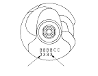

|
Main Bearing Selection
Crankshaft Bore Code Location
Letters or bars have been stamped on the end of the block as a code for the size of each of the four main journal bores.
Use them, and the numbers stamped on the crankshaft (codes for main journal size), to choose the correct bearings. If the codes are indecipherable because of an accumulation of dirt and dust, do not scrub them with a wire brush or scraper. Clean them only with solvent or detergent.
|
Main journal code locations (Numbers or Bars)
 |